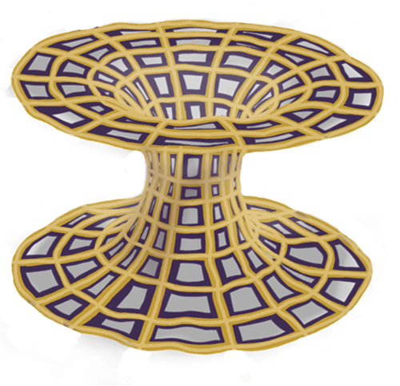
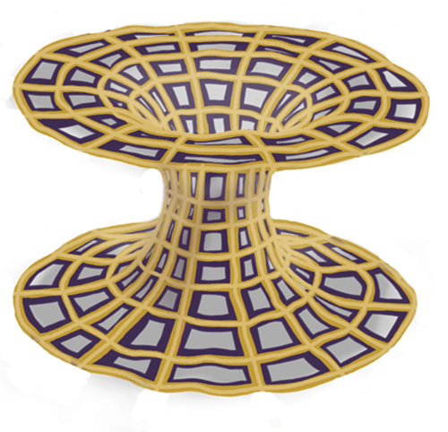

Om 3d-filerna...
TODO

Möjligheten att resa i tiden har varit ett vanligt förekommande tema i böcker och filmer, med exempel som Tillbaka till framtiden och Interstellar, men är det verkligen bara science fiction? Einsteins relativitetsteori säger att ju fortare något färdas desto långsammare upplevs tiden, vilket också visats med experiment. Detta skulle alltså kunna kallas att resa i tiden, om än en väldigt kort resa. En annan teori gäller så kallade maskhål, passager i rumtiden som skulle kunna fungera som genvägar. Dessa har aldrig upptäckts i verkligheten, men matematik har visat att de är teoretiskt möjliga.
Idén om dessa kom ursprungligen från österrikaren Ludwig Flamm som pratade om ett “vitt hål”, vilket till skillnad från svarta hål skulle kasta ut saker och inte dra in dem. Denna teori utvecklade sedan Albert Einstein och Nathan Rosen med lagarna om relativitetsteorin, varefter de insåg att det matematiskt var möjligt. Dessa maskhål, som kommit att kallas för “Einstein-Rosen broar”, blir som genvägar då de skulle kunna korta ner både restid och avstånd. Visuellt kan man se dem som tunnlar vilka förbinder två punkter i rumtiden, antingen olika platser, olika tidpunkter eller både och.
 

Trots att de förutspåtts matematiskt av relativitetsteorin har inga ännu upptäckts i verkligheten och det finns mycket som talar emot teorin. Ursprungliga maskhål förutspås existera i mikroskopisk storlek, ca 10-33 cm, men det är möjligt att de blir större då universum expanderar. Ett annat problem gäller stabiliteten. Som följd av gravitationen skulle dessa broar kollapsa fort och Einsteins ekvationer säger dessutom att inget med icke-negativ energi skulle kunna åka igenom dem (*), vilket skulle göra dem meningslösa för resor. För att undvika kollaps hade det krävts att de innehöll exempelvis negativ materia.
Kanske kommer en Einstein-Rosen bro någon gång hittas, kanske kommer de bara förbli spekulationer och science fiction. Oavsett vilket så är det en spännande matematisk teori som vi med vår pennhållare ville uppmärksamma.

TODO